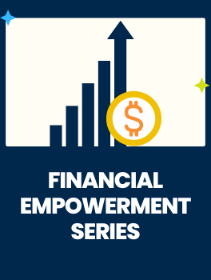
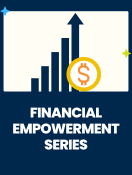

Financial Empowerment Series: #3 Ultimate Financial Wellness
January 28, 2025 5:00 pm - 7:00 pm
CEW+, 330 E. Liberty Street, Ann Arbor, MI

At CEW+, we navigate circumstantial barriers by providing academic, financial, and professional support to help you reach your personal potential. Established to support women through higher education, we lift up women and all underserved communities at U-M and beyond. Through career and education counseling, funding, workshops, events, and a diverse, welcoming community, we exist to empower. We are CEW+, and we're here to help you reach your potential.
January 28, 2025 5:00 pm - 7:00 pm
CEW+, 330 E. Liberty Street, Ann Arbor, MI
January 29, 2025 12:15 pm - 12:45 pm
Virtual
At CEW+, we work to break down barriers and increase access through funding. For U-M students, staff, faculty, and surrounding community, we offer opportunities for scholarships, emergency grants, sponsorships, fellowships, and more for a range of situations and life circumstances.
The CEW+ Scholarship Program was established in 1970 to honor the academic performance and potential of women whose education has been interrupted and to commemorate the one-hundredth anniversary of the admission of women to the University of Michigan. Thanks to the generosity of individuals, organizations, clubs, and foundations, CEW+ has awarded over 1,900 scholarships since 1970. With support from our generous donors, CEW+ was able to expand the program in 2008 to include additional scholarships for students of all genders.
Fellowships offered through this application cycle can be used at the end of the Winter 2025 term, Spring/Summer 2025 term, or Fall 2025 term. Awards will vary in amount based on proposal merit, budget, and need.
We offer career, education, and emergency funding counseling appointments in person, over the phone, or via Zoom. In-person counseling appointments are available on Wednesdays, Thursdays, and Fridays. Zoom and phone appointments are available Monday through Friday. Here are 3 ways to schedule an appointment:
Through a variety of initiatives, groups, and lecture series, we lift up and make space for diverse voices.
FEI delves into the underlying psychological, social, and intergenerational roots that underlie individual financial choices. By filling these gaps, participants become equipped with the self-knowledge and tools to be empowered to take charge of their financial well-being.
Resources for U-M students with caregiver responsibilities.
Today, the University of Michigan will join thousands of organizations from across the world by participating in Giving Tuesday. You can support dozens of inspiring projects and make an impact today.